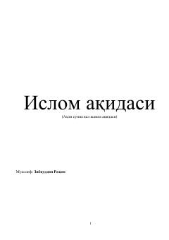

IAAhli sunna val jamoa aqidasini sodda tilda tushuntiruvchi islomiy qoʻllanma.
Ushbu kitob Ziyovuddin Rahim tomonidan yozilgan bo'lib, Ahli sunna val jamoa aqidasini oddiy va tushunarli tilda bayon etadi. Muallif din, imon, shirk, bidʼat kabi asosiy tushunchalarni savol-javob shaklida tushuntiradi. Kitob mусулмонларга soʻf islom aqidasini mustahkamlashga yordam berish maqsadida yozilgan.